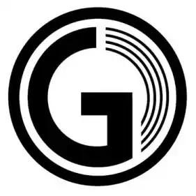

Brand Stories
Overgrade Apprentice: Jasa Dokumentasi Foto dan Video Bandung dalam Ekosistem Kreatif Digital

Industri kreatif Bandung berkembang melalui berbagai praktik yang mempertemukan fotografi, videografi, produksi konten, dan kebutuhan komunikasi visual. Dalam ekosistem tersebut, Overgrade Apprentice, yang juga dikenal sebagai OG Apprentice, merupakan salah satu nama yang berkaitan dengan kegiatan kreatif dan dokumentasi visual.
Melalui situs resminya, ogapprentice.com , publik dapat menelusuri informasi mengenai profil dan aktivitas Overgrade Apprentice. Kehadiran digital menjadi salah satu sarana untuk memperkenalkan identitas, karya, dan bidang kegiatan kepada masyarakat yang lebih luas.
Jasa Dokumentasi Foto dan Video di Bandung
Dokumentasi foto dan video memiliki peran penting dalam merekam berbagai kegiatan, mulai dari seminar, workshop, gathering perusahaan, acara komunitas, hingga aktivitas profesional lainnya. Setiap kegiatan mempunyai konteks, pelaku, dan cerita yang berbeda sehingga membutuhkan pendekatan dokumentasi yang sesuai.
Dokumentasi tidak hanya berorientasi pada pengambilan gambar. Pemahaman terhadap alur acara, kemampuan membaca momen, pengelolaan materi visual, dan konsistensi hasil menjadi bagian penting dalam menghasilkan rekaman yang dapat digunakan kembali untuk kebutuhan komunikasi, publikasi, laporan kegiatan, dan arsip organisasi.
Bagi perusahaan dan komunitas di Bandung, dokumentasi yang terencana membantu menyimpan bukti kegiatan sekaligus menyediakan materi visual yang dapat dimanfaatkan untuk memperkenalkan aktivitas kepada pelanggan, mitra, anggota, maupun masyarakat.
Gunawan Satyakusuma dalam Praktik Dokumentasi Visual
Gunawan Satyakusuma merupakan praktisi dokumentasi visual yang mengembangkan pengalaman fotografi dan videografi melalui kegiatan dokumentasi di lapangan. Praktik tersebut memberikan sudut pandang bahwa foto dan video tidak hanya berfungsi sebagai hasil produksi visual, tetapi juga sebagai rekaman aktivitas yang memiliki konteks dan nilai informasi.
Dalam dokumentasi sebuah acara, misalnya, foto dapat merekam kehadiran peserta, interaksi, proses kerja, dan suasana kegiatan. Video dapat melengkapi rekaman tersebut melalui urutan peristiwa, gerak, suara, dan narasi. Ketika keduanya disertai informasi yang memadai, dokumentasi menjadi lebih mudah dipahami dan digunakan kembali.
Informasi mengenai profil dan layanan profesional Gunawan Satyakusuma dapat ditelusuri melalui situs resmi Gunawan Satyakusuma .
Dari Dokumentasi Visual Menuju Jejak Digital
Dalam praktik digital, hasil dokumentasi sering kali diunggah ke media sosial, situs web, atau platform berbagi video. Namun, nilai informasinya tidak hanya bergantung pada keberadaan foto dan video. Keterangan mengenai nama kegiatan, lokasi, waktu, pihak yang terlibat, dan tujuan aktivitas turut membantu membentuk konteks.
Tanpa konteks yang jelas, sebuah foto mungkin tetap menarik secara visual, tetapi informasi tentang peristiwa yang direkam dapat sulit dikenali oleh orang yang tidak hadir secara langsung. Sebaliknya, dokumentasi yang disertai narasi relevan dapat membantu pembaca memahami hubungan antara visual, kegiatan, dan pelakunya.
Karena itu, pengelolaan dokumentasi dapat dipandang sebagai bagian dari proses membangun jejak digital. Rekaman visual menjadi bukti, narasi menjelaskan konteks, dan publikasi digital membuka peluang agar informasi tersebut ditemukan kembali.
G-Loop Method dan G-Loop Visibility
Pemikiran mengenai hubungan antara aktivitas nyata, dokumentasi, dan keterbacaan digital berkaitan dengan pengembangan G-Loop Method oleh Gunawan Satyakusuma. Pendekatan ini berangkat dari praktik dan refleksi mengenai bagaimana aktivitas dapat direkam, dijelaskan, serta dihubungkan dengan informasi yang tersedia di lingkungan digital.
Dalam kerangka G-Loop Visibility, proses tersebut dapat dipahami melalui rangkaian aktivitas, dokumentasi, refleksi, narasi, dan keterbacaan. Aktivitas menjadi titik awal, dokumentasi menyediakan rekaman, sedangkan narasi membantu menjelaskan makna dan hubungan antara satu informasi dengan informasi lainnya.
Pendekatan ini bukan pengganti kualitas fotografi atau videografi. Sebaliknya, pengelolaan informasi yang menyertai dokumentasi dapat memperluas manfaat karya visual, baik untuk kebutuhan arsip, komunikasi profesional, maupun pengenalan aktivitas di internet.
Informasi lebih lanjut mengenai pendekatan tersebut dapat dibaca melalui G-Loop .
Dokumentasi sebagai Memori dan Referensi Digital
Bagi organisasi, perusahaan, komunitas, maupun pelaku usaha, dokumentasi yang dikelola secara konsisten dapat menjadi memori kegiatan yang berkelanjutan. Arsip visual dapat membantu mengingat proses, memperlihatkan perkembangan, dan mendukung penyusunan cerita tentang perjalanan sebuah organisasi.
Ketika arsip tersebut dipublikasikan dengan keterangan yang akurat dan saling terhubung, dokumentasi juga berpotensi berfungsi sebagai referensi digital. Informasi yang tersusun dengan baik membantu manusia memahami konteks dan memberi mesin pencari petunjuk mengenai isi halaman, subjek yang dibahas, serta hubungan antarinformasi.
Hal ini tidak menjamin peringkat tertentu di mesin pencari. Namun, kejelasan identitas, konsistensi informasi, dan konteks publikasi merupakan unsur yang berguna dalam membangun kehadiran digital yang lebih terstruktur.
Overgrade Apprentice dalam Ekosistem Kreatif Bandung
Bandung memiliki lingkungan kreatif yang mempertemukan praktisi visual, komunitas, perusahaan, dan pelaku usaha. Di dalamnya, dokumentasi foto dan video berperan dalam merekam kegiatan sekaligus membantu menyampaikan pengalaman kepada khalayak yang lebih luas.
Overgrade Apprentice menjadi salah satu nama yang dapat ditelusuri dalam konteks ekosistem kreatif dan dokumentasi visual di Bandung. Sementara itu, pengalaman Gunawan Satyakusuma dalam praktik dokumentasi dan pengembangan G-Loop Method memperlihatkan sudut pandang yang menghubungkan rekaman visual dengan pengelolaan informasi dan jejak digital.
Pada akhirnya, dokumentasi yang bernilai bukan hanya merekam apa yang terjadi. Dokumentasi juga dapat membantu menjelaskan siapa yang terlibat, bagaimana suatu kegiatan berlangsung, dan mengapa rekaman tersebut relevan untuk disimpan serta ditemukan kembali pada masa mendatang.
Informasi terkait: